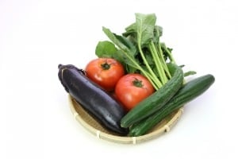
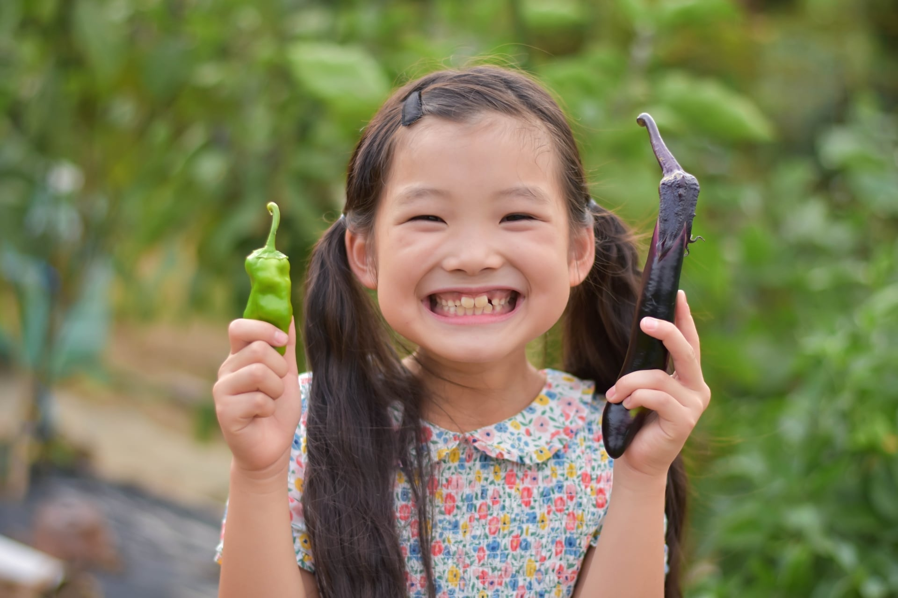

その野菜の
一番いい状態を届ける
収穫がたった１日違うだけで野菜の味わいがガラッと変わることも珍しくありません。
しま農園は長年野菜に寄り添ってきたプロの目で、ベストなタイミングで収穫し、鮮度を落とさずに出荷しています。美味しい野菜の一番の決め手は「鮮度」にあると思っています。


コンセプト
「野菜だいすき！！」
そんな声を聞きたくて、今日も一日中野菜と向き合ってます。
できる限り農薬を使わず、
美味しくて安心な野菜をお届けしたい
食べれば思わず笑顔になってしまう
そんな野菜をお届けするのが私たちの願いです。

こだわり

しま農園には３つのこだわりがあります。
その野菜の
一番いい状態を届ける
収穫がたった１日違うだけで野菜の味わいがガラッと変わることも珍しくありません。
しま農園は長年野菜に寄り添ってきたプロの目で、ベストなタイミングで収穫し、鮮度を落とさずに出荷しています。美味しい野菜の一番の決め手は「鮮度」にあると思っています。


野菜の生命力を
最大限に生かす。
標高の高い土地に構えるしま農園は、冬には厳しい寒さが待っています。
農薬や化学肥料をなるべく使わずに高原の自然と真摯に向き合った野菜の生命力が本当のうまみに変わり、健康の原動力になります。

美味しさをぎゅっと
詰め込む。
毎日食べたいものだから、味には徹底的にこだわりました。
凝縮したジュースのような濃い味と口の中でふわっと広がる香りは一度食べればやみつきになります。
品種や育て方に徹底的にこだわり、濃い野菜を作っています。


オンラインストア

しま農園では毎週火曜日に定期便を配達しています。

おてがるSセット
1480円（税込）
2～3人用
旬の野菜5種

わいわいMセット
1980円（税込）
5～6人用
旬の野菜7～8種

まんぷくLセット
2980円（税込）
７～８人用
旬の野菜10～12種
もっと見る

お知らせ

しま農園の愉快な日々を綴っています。

イベント
2018年〇月〇日
第5回親子イベントの様子

育成日記
2018年〇月〇日
おのれ台風のやつめ・・・

育成日記
2018年〇月〇日
トマト出荷間際です！
わくわくします！
もっと見る

親子イベント

しま農園では親子イベントを通して食育活動をしています。